Caves and Karst of Turkey
Üzerinde hemen hemen iki yıldır çalıştığımız "Caves and Karst of Turkey" dünyanın en prestijli yayınevlerinden birisi olan…
Arşiv
2009'dan 2021'e 190 yazı: saha çalışmaları, ekspedisyonlar, kongreler ve köşe yazıları.
Üzerinde hemen hemen iki yıldır çalıştığımız "Caves and Karst of Turkey" dünyanın en prestijli yayınevlerinden birisi olan…

Aralık 2020 de yaptığımız bu çalışma ile "Kayseri Yeraltı Yapıları Envanteri Projesi" altıncı yılını tamamladı ve yedinci yılına…

İsviçre’nin Bern şehrinde 4 Eylül 2019 tarihinde başlayan ve üç gün süren 25. EAA (Avrupa Arkeologlar Birliği Toplantısı) da…
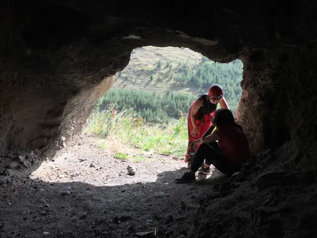
Uzun bekleyişler sonunda bakanlıktan izin geldi ve 1 Eylül 2020 tarihinde Ardahan Üniversitesi'nden Göknil Arda başkanlığında…
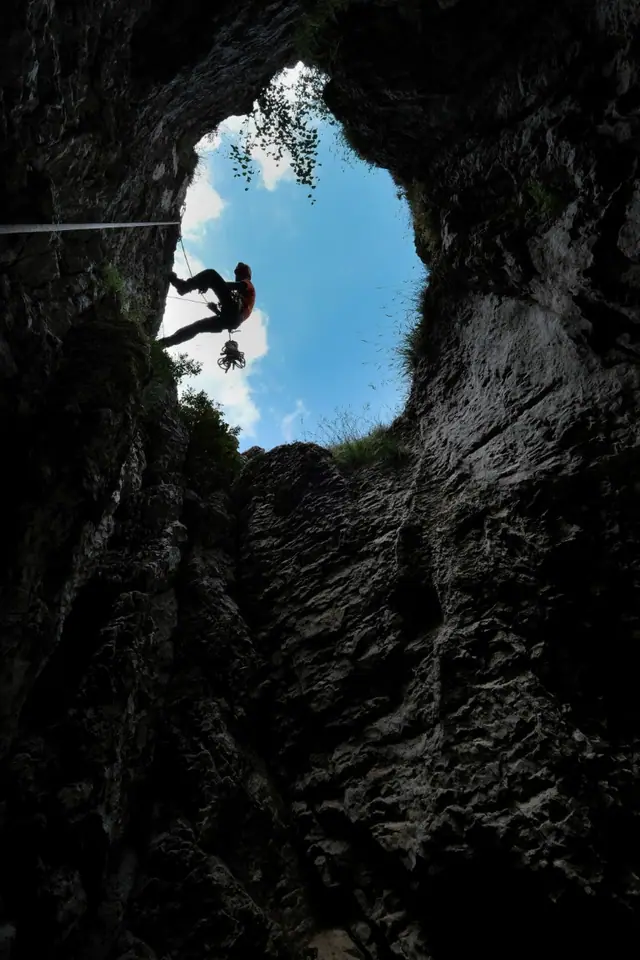
İki yıl önce karma bir Fransız ekiple birlikte bu bölgede yaptığımız çalışmanın devamında, 1 Ağustos 2019 tarihinde Fransız ve…
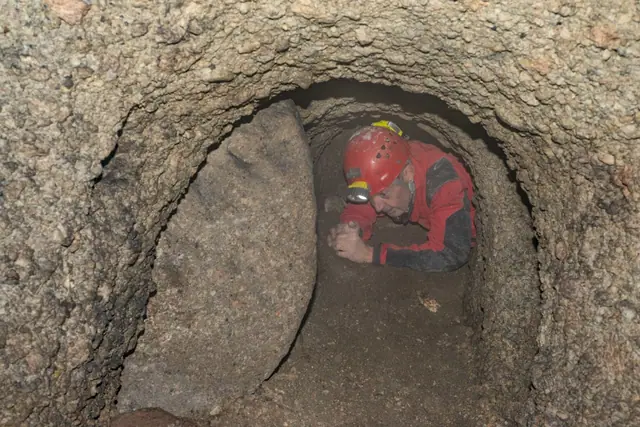
17 Kasım 2019 günü başlayan bu çalışma, tümüyle Büyük Bürüngüz yerleşiminde bir önceki çalışmamızda keşfedilen iki yeraltı…
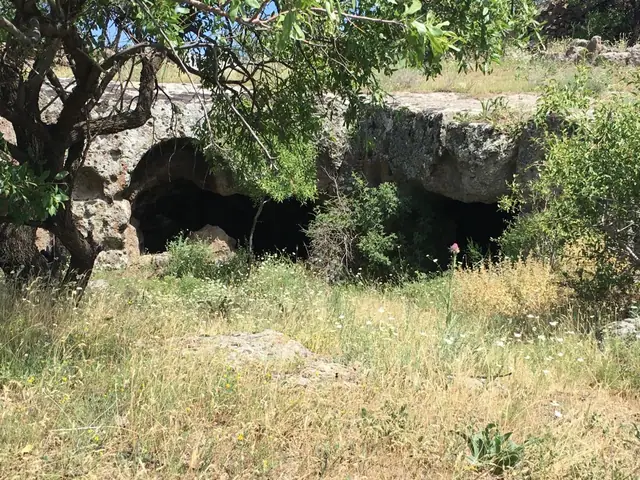
Kayseri’nin İncesu ilçesinde büyük bir yeraltı şehri bulunduğuna dair basında çıkan haberler üzerine 23 Haziran 2020 tarihinde…
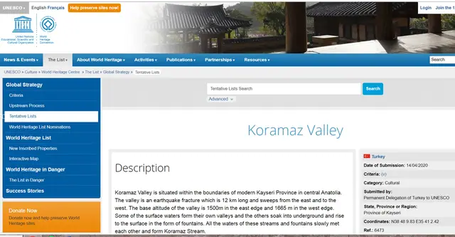
Yaklaşık bir yıldır süren çabalarımız sonucunda 14 Nisan 2020 tarihinde Koramaz Vadisi de UNESCO Dünya Mirası Geçici Listesi’ne…
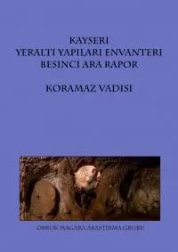
Koramaz Vadisi’nde bugüne dek yaptığımız tüm çalışmalar “Kayseri Yeraltı Yapıları Beşinci Ara Rapor” olarak yayımlandı . 202…
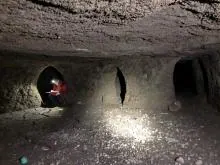
Gaziantep’in livas ve kastellerinden sonra Kayseri’nin Koramaz Vadisi’ni de UNESCO Dünya Mirası Listesi’ne dahil etme…
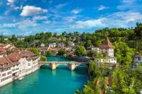
OBRUK bu yıl 4-7 Eylül tarihleri arasında İsviçre – Bern’de yapılacak 25. Avrupa Arkeologlar Birliği Toplantısı’nda özel bir…
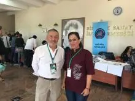
OBRUK Mağara Araştırma Grubu olarak 3-6 Ekim tarihleri arasında Antalya’da düzenlenen 4. MESS’e (Middle East Speleology…
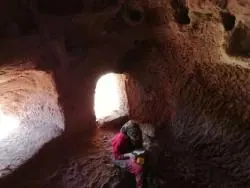
Kayseri; Koramaz Vadisi, Dimitre Köyü ve civarında bulunan kaya yerleşimlerinde İsrailli, Alman, Fransız ve Rus mağaracılardan…
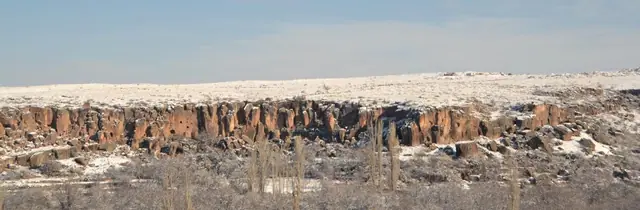
OBRUK Mağara Araştırma Grubu olarak yıllar boyu emek verdiğimiz ve sonunda, geçtiğimiz aylarda UNESCO Dünya Mirası aday listeye…
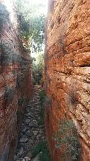
Gaziantep’e yaptığımız bu son gezide inanılmaz bir yapıyı daha ölçtük. Bu bölgede yıllardır sürdürdüğümüz çalışmaların her…
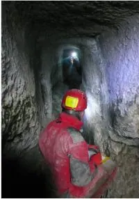
Araştırmasına yıllar önce başladığımız Gaziantep'in livas ve kastelleri, dün UNESCO Dünya Mirası aday listeye kabul edildi.…
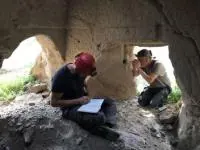
Kayseri Yeraltı Yapıları Envanteri Projesi’nin son iki çalışması boyunca Kayseri yakınlarında bulunan, 16 km uzunluğundaki…
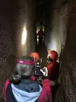
Gaziantep’in livas ve kastellerini yedi yıl önce çalışmaya başladık. Geçen bunca yıl içinde bölgeye sayısız gezi yaptık ve hem…
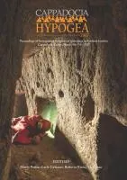
Kapadokya’da düzenlediğimiz HYPOGEA 2017 Uluslararası Yeraltı Yapıları Kongresi’nin üzerinden tam bir yıl geçti. Kongrede…
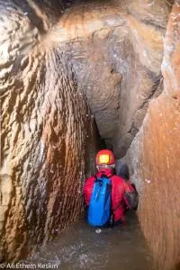
Uzun bir aradan sonra Gaziantep çalışmalarımız yeniden hız kazanmaya başladı. Geçen hafta yaptığımız dört günlük çalışma oldukça…
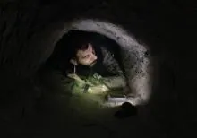
Bu projeye tam dört yıl önce başladık. Aradan geçen bu sürede 21 gezi yapmışız. Dördüncü yılını tamamlamış olan “Kayseri Yeraltı…
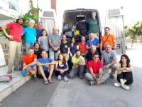
10-19 Eylül tarihleri arasında arazideydik. Önce Türkiye mağaralarını gezmeye gelen aralarında jeolog, arkeolog ve…
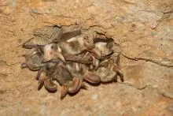
Kayseri’deki projemizin dördüncü yılında Develi ilçesini çalışmaya başladık. Şimdiye dek çalıştığımız üç farklı ilçede toplam 32…
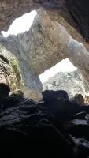
Gazipaşa’nın Gökkuzluk Yaylası’nda bulunan Sacayağı Düdeni 1996 yılında keşfedildi. Büyük bir çöküntü şeklinde başlayan mağara,…
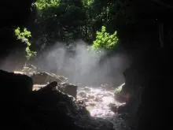
Hamdi Mengi’ nin daveti üzerine bu hafta sonu Zonguldak’taydık. Önce Kızılelma Mağarası’na tam ortasına denk gelen -85 m’lik…
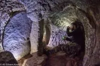
Kayseri’nin yeraltı yapılarının ölçüm ve haritalanmasını tamamlamaya herhalde hiçbirimizin ömrü yetmeyecek. Bu son gezimizin…
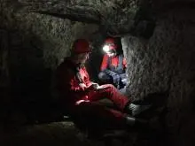
Kayseri’deki 16. çalışmamızda Tomarza ilçesindeki Kuşcağız, Kömür ve Emiruşağı yeraltı şehirlerinin ölçümleri tamamlandı.…
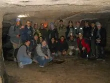
Dünyanın önde gelen yeraltı yapıları uzmanlarını buluşturan HYPOGEA kongrelerinin ikincisi 6-10 Mart tarihleri arasında Ürgüp’de…
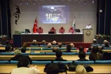
Kayseri’deki 14. Çalışmamız ne yazık ki kötü hava şartlarına ve ciddi kar yağışına denk geldi. Ali Ethem Keskin’in fotoğraflamayı…
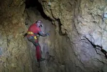
ATLAS Dergisi’ne yazacağımız bir makale için geçen hafta Antalya / Manavgat, Tilkiler Mağarası’nda idik. Tilkiler Mağarası; 6.818…
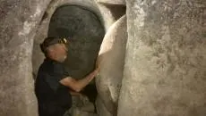
Bu son Kayseri gezisi tümüyle Tomarza ilçesine yönelikti. Kayseri’nin 50 km kadar güneyinde bulunan bu ilçe kelimenin tam…

2012 yılında başladığımız Gaziantep Yeraltı Yapıları Envanteri çalışmalarımızı ertesi yıl yayımladığımız bir raporla…
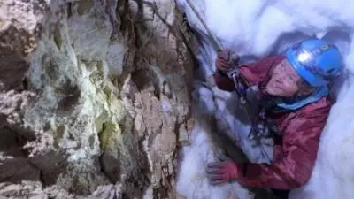
Fransızlarla birlikte yaptığımız iki haftalık Gündoğmuş faaliyetinde Geyik Dağı’nın batısına doğru uzanan bölgede 115 yeni mağara…
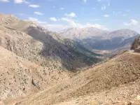
21 Ağustos – 4 Eylül tarihleri arasında İsviçreli ve Fransız mağaracılarla birlikte Antalya – Gündoğmuş doğusunda, Geyik Dağı’nda…
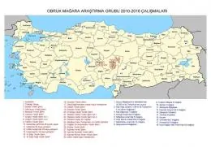
14 Mayıs 2010 yılında kurulduk. Yani, bir anlamda, Türkiye’nin en genç mağara kuruluşlarından birisiyiz. Geçtiğimiz altı yıl…
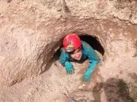
Kayseri ilinde çalışmaya 27 Aralık 2013 tarihinde başladık ve geçen 2,5 yıl içinde toplam 12 çalışma yaptık. Geçtiğimiz hafta…
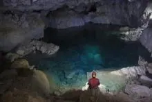
2011 ve 2012 yıllarında yaptığımız üç farklı çalışma sonucunda Insuyu Mağarası 8.350 metreye ulaşmıştı. Bu çalışmalar sırasında…
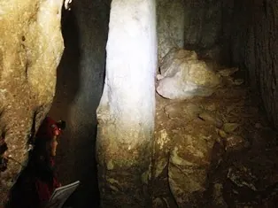
ÇEKÜL Bölge Koordinatörü Zafer Okuducu’nun talebi üzerine, uzun bir aradan sonra yeniden Gaziantep’te çalışmaya başladık. Bu…
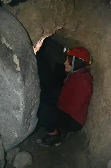
Yine aynı şey oldu: Kayseri’ye, Ağırnas / Akbin Vadisi’nde eksik kalan ufak bir yeraltı yapı grubunu ölçüp haritalamaya gittik ve…
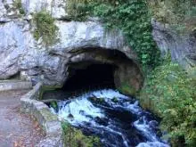
Fransa’nın Toulouse şehri yakınlarında, Saint Martin le Vieil kasabasında bu yıl onuncusu yapılan “Archéologie et Décors des…
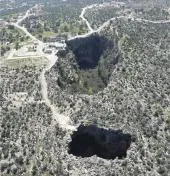
OBRUK Mağara Araştırma Grubu olarak “Obruk” belgeselinin çekimleri için geçen hafta Mersin / Erdemli’de idik. Helivizyon…
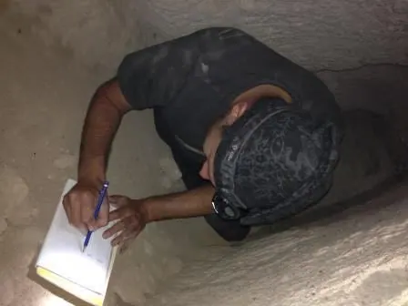
3 -6 Temmuz tarihleri arasında sürdürdüğümüz bu 10. Kayseri çalışmasında, daha önce başladığımız ve Ağırnas’tan Dimitri Köyü’ne…
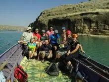
14-18 Mart 2013 tarihlerinde bu bölgede yaptığımız ön araştırmadan iki yıl sonra 11 kişilik bir ekiple yeniden Halfeti kuzeyinde,…
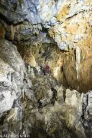
ATLAS Dergisi’nde yayımlanacak bir yazı için Antalya civarında 7 günde 9 mağara gezdik. İlk olarak İnsuyu’da suyun şimdiye dek…
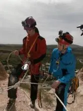
Italyan televizyonu tarafından hazırlanan "Kapadokya'nın Sırları" isimli bir belgesel çekimi için Ürgüp'teyiz. Kapadokya’nın…
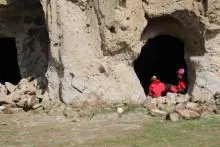
Bu çalışmada Ağırnas’tan Dimitri Köyü’ne dek uzanan Akbin Vadisi’ndeki kaya yerleşimlerinin ölçümüne başlandı. Ağırnas Köyü'nün…
11-15 Mart günleri arasında Italya'nın Roma şehrinde düzenlenen HYPOGEA 2015 Yeraltı Yapıları Kongresi'nden döndük. Poster ve…
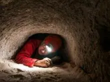
Bu gezide dokuz gün içinde tam 6 yeraltı yapısı ölçtük. Kayseri / Ağırnas’ta Mimar Sinan Evi’nin altında eksik kalan son…
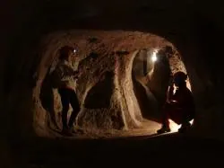
Mimar Sinan'ın köyü Ağırnas'ta, hele hele Mimar Sinan'ın evinin altında yer alan yeraltı şehrinde çalışmak çok büyük bir keyif.…
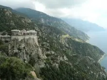
“Kadınlar” iyi ki varsınız… Yoksa biz bu cinsimizle hiç çekilmezmişiz, Athos’ da gördüm. Rahipler her ne kadar sorunsuz insanlar…
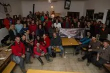
Proje ve araştırma gezileriyle dolu bir yazın ardından, bu kez de biraz dinlenmek ve eğlenmek için çantamızı sırtlandık ve 24-28…
Geçtiğimiz haftasonu üç günlük bir toplantı için Kayseri’de idik. Tarihi Kentler Birliği’nin Kayseri toplantısında 400 kişiyi…
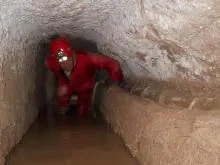
Nevşehir yakınlarında yeralan ve turizme açılması planlanan Mazıköy Yeraltı Şehri’nin temizlenen bazı galerilerinin ölçümü için…
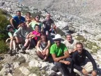
OBRUK ekibi olarak, 9 – 18 Ağustos tarihleri arasında, SELAS grubunun daveti üzerine “Lion Cave 2014” ekspedisyonuna katıldık.…
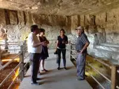
Gaziantep'te daha önceki çalışmalarımız sırasında araştırıp haritaladığımız bazı mağaraların ne şekilde korunarak…
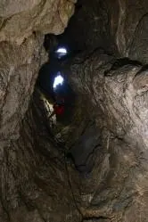
Ezgi ve Melike, Lion 2014 Ekspedisyonu’na katılmak üzere yarın Girit’e doğru yola çıkıyorlar. Bu mağarada geçen yıl yapılan…
OBRUK Dergisi'nin 7. sayısı sonunda matbaadan çıktı ve elimizdeki adreslere postalanmaya başlandı. Bu sayının ağırlığı, son…
Bu defaki çalışma öncekilerden oldukça farklıydı: Yeşilhisar'a bağlı Soğanlı Köyü'nde kaldık ve bu civarda yer alan 8 köyün…
Bu beşinci çalışma ile Gesi - Belağası Mahallesi’nde ve buradan güneye doğru uzanan Ötedere Vadisi’nde bulunan toplam dört farklı…
Bu projenin zorluğu daha önce gerçekleştirdiğimiz Gaziantep Yeraltı Yapıları Envanteri Projesi ile kıyas kabul etmez. Kayseri’nin…
Geçtiğimiz haftasonu Sofya'da idik. Artık geleneksel hale gelen ve BSU tarafından her yıl farklı bir ülkede düzenlenen…
Bu çalışmada Hisarcık / Kelebek Vadisi Yeraltı Şehri ve Gesi / Kayabağ Köyü kaya yerleşimleri ile aynı yerde bulunan iki yeraltı…
ÇEKÜL ve Kayseri Büyükşehir Belediyesi işbirliğiyle yürütülen Kayseri Yeraltı Yapıları Envanterleme Projesi kapsamında yaptığımız…
ÇEKÜL Kayseri Temsilcisi Prof. Osman Özsoy ve Kayseri Büyükşehir Belediyesi’nin işbirliğiyle oluşturulan Kayseri yeraltı…
Kocaeli DKMP Şube Müdürlüğü tarafından bu bölgede yeni bulunan 23 mağara geçen hafta Orman ve Su İşleri Bakanlığı, Doğa Koruma ve…
Casola Valsenio, İtalya’nın kuzeyinde, Bologna yakınlarında 2.000 nüfuslu, yemyeşil küçük bir kasaba… İtalyan mağaracılarının…
Nevşehir Müze Müdürlüğü’nün isteği üzerine, Ağustos ayında gerçekleştirdiğimiz Derinkuyu Yeraltı Şehri haritalama çalışmasının…
Google Earth uydu görüntülerinde "Batanyayla" etiketli olarak eklenmiş yandaki Panoramio fotoğrafı nı gördüğümüzden beri bu…
Bu çalışma diğerlerinden oldukça farklı; Nevşehir’de Derinkuyu Yer Altı Şehri’ni ölçüyoruz. Diyarbakır çalışmasının ardından…
Çermik ilçesi Yeniköy Düdeni'nin ilk tespiti yıllar önce Türkiye mağaracılığının kurucusu kabul edilen Dr. Temuçin Aygen…
28 Temmuz – 4 Ağustos 2013 tarihleri arasında İtalya’nın Trieste kentinde düzenlenen ‘Second International Meeting of Cave…
Bu yıl 16.sı Çek Cumhuriyeti’nin Brno şehrinde düzenlenen Uluslararası Mağaracılık Kongresi aslında sadece bir kongre değil. Tüm…
Kahramanmaraş ili Tekir ilçesi civarında ve özellikle doğusundaki yaylalarda çalıştığımız 4 yıldan sonra nihayet batı cepheye de…
16. Uluslararası Speleoloji Kongresi 21 Temmuz 2013 günü Çek Cumhuriyeti'nin Brno şehrinde başlıyor. 9 gün sürecek kongreye bu…
Kahramanmaraş kuzeyinde 2009 yılında başlayan mağara araştırmalarımız bölgenin tümüne yayılarak dört yıldır sürmekte. Geçen süre…
Dört günlük bir kaynakça araştırması için İtalya’nın Bologna şehrine, İtalya Mağaracılık Federasyonu’nun (SSI) kütüphanesine…
Antalya kuzeyinde, Ahırtaş Köyü’nün kuzey batısında yer alan Kocain’in mümkün olduğunca detaylı bir haritasını çizmek için 2001…
Bu haftasonu iki günlük Ayvaini etkinliğimiz, her zamanki gibi keyifli geçtiyse de iki ana hedefimize de ulaşamadık. Öncelikle…
Beş gün süren dört kişilik Halfeti – Savaşan – Gaziantep çalışmamız tamamlandı. Ali Ethem ve Doruk’un Halfeti ile Savaşan’daki su…
OBRUK, ODTÜ SAT- Madag ortak etkinliği olarak, 13-14 Nisan tarihlerinde Antalya'nın Akseki İlçesinin Kuyucak Beldesi'ndeki Yeni…
Bir insan için kelebeğin hayatı ne kadar kısadır değil mi? Peki bir santimetrelik oluşum için yüzlerce yıl gereken bir mağaradaki…
Daha ön araştırma sırasında bu projeye devam edip etmeme konusunda kararsız kaldık. Amacımız, Halfeti kuzeyinde Kızılin ile…
OBRUK Dergisi Sayı 6 basıldı ve dağıtıma hazır. Bu sayının basımına destek olan Gaziantep Büyükşehir Belediyesi'ne sonsuz…
Gaziantep Büyükşehir Belediyesi, ÇEKÜL Çevre ve Kültür Değerlerini Koruma ve Tanıtma Vakfı ve o'mag Obruk Mağara Araştırma…
Gaziantep Büyükşehir Belediyesi, Çekül Çevre ve Kültür Değerlerini Koruma ve Tanıtma Vakfı ve Obruk Mağara Araştırma Grubu'nun…
2012 yılı boyunca yedi geziyle sürdürdüğümüz Gaziantep Yeraltı Yapıları Envanteri’nin raporu yayımlandı ve ilgili mercilere…
OBRUK Grubu olarak 21-28 Temmuz 2013 tarihleri arasında Çek Cumhuriyeti'nin Brno şehrinde yapılacak olan 16. Uluslararası…
Biz de haftasonu Ayvaini Mağarası'nın üstünde, Doğanalan'dan Ayvaköy'e uzanan platoda yürüyüş yaptık. Tümüyle yoğun bir meşe…

Burdur İnsuyu Mağarası'nda yürütmekte olduğumuz haritalama projesinin 5. etabı yorucu, zorlayıcı ama bir yandan da çok keyifli ve…
Burdur İnsuyu Mağarası 5. etap çalışmasının hemen ardından Antalya, Ahırtaş Köyü yakınlarındaki Kocain Mağarası'na geçtik.…
2011 yılı Kasım ayında Orman ve Su İşleri Bakanlığı, Milli Parklar Genel Müdürlüğü, Mağara Koruma Şubesi işbirliğiyle…
Bu defaki çalışmamız daha öncekilerden oldukça farklıydı. Gezinin ana amacı, Gaziantep Büyükşehir Belediye Başkanı Sn. Asım…
13. İsviçre Ulusal Sempozyumu ile birlikte yapılan 2. Avrupa Mağara Koruma Sempozyumu bugün gerçekleştirilen saha gezileri ile…
Yaklaşık bir yıl kadar önce Amasra İnderesi Mağarası'nda tarafımızca örneklenen yeni bir tatlısu amfipod türünün betimlemesi,…
Neredeyse on aydır sürdürdüğümüz ve şimdiye dek elliden fazla mağara bulup, ölçtüğümüz ve haritaladığımız "Gaziantep Yeraltı…
Gaziantep yeraltı yapıları envanteri projesinde 6. çalışmayı tamamladık. Bu kez 7 mağaracının görev aldığı çalışma bir haftaya…
Amasra yakın civarı mağaracılık için ilginç ve çeşitli imkanlar sunuyor. 2009 yılından beri sürdürdüğümüz çalışmalarda Amasra…
Avrupa Birliği Youth-in-Action programı dahilinde ve Avrupa Mağaracılık Federasyonu desteği ile düzenlenen GENÇ MAĞARACILAR…
4 kişilik bir ekiple sürdürdüğümüz 5. Antep Çalışması tamamlandı. Toplam 10 mağara ölçüldü ama, bunların arasında en önemlisi…
Yaman Özakın'ın ekspedisyon sırasında çektiği görüntülerle bir araya getirmeye başladığı video'dan kısa bir tadımlık jenerik. Keş…
7-21 Temmuz tarihlerinde bir kez daha Keş Dağı Yaylasında idik. 2009 yılında bulunan Keş Dağı Düdeninde bu sene ulaştığımız -717…
Yaklaşık bir yıl kadar önce Amasra İnderesi Mağarası'nda tarafımızdan keşfedilen yeni bir tatlısu amfipod türü, Prof. Dr. Murat…
"Gaziantep Yeraltı Yapıları Envanteri" projemizle ilgili detaylı bir haber / röportaj, Gaziantep Life Dergisi'nin Haziran-Temmuz…
Dördüncü senemiz. Bu heyecan verici araştırmanın artık sonuna geldiğimizi umuyoruz. Geçen senelerdeki çalışmalar ile -620 m…
Eeee, yeter artık! Tam "Bu kısım artık bitiyor, birkaç kontrol ölçümü yapıp diğer kısma geçeriz" diye düşünürken ufacık bir…
Eylül sonu İsviçre'de gerçekleştirilecek olan 2. Avrupa Mağara Koruma Sempozyumu 'nda (ESPS2012) o'mag grubu da bir bildiri…
Sayı 5 nihayet matbaadan çıktı. Yaklaşık 4 aydır yayına hazırdık aslında ama hiç bir geliri olmayan, kısıtlı sponsorluk…
Aylardır sürdürdüğümüz Gaziantep Yeraltı Yapıları Envanteri çalışması, ATLAS Dergisi'nin Haziran 2012 sayısında 16 sayfa olarak…
Gaziantep Yeraltı Yapıları Envanteri için bu şehire yaptığımız 4. gezide 5 kişilik bir ekip olarak 3 gün çalıştık. Amacımız, daha…
Keş Dağı Düdeni 2012 Ekspedisyonu için hatıra t-shirt'leri yaptırılıyor. Şimdi sipariş verenlere 20 TL, ve istenilen bedende…
4 kişilik ekiple yeniden Gaziantep'teyiz. Gaziantep Belediyesi KUDEB ve ÇEKÜL ile birlikte sürdürdüğümüz bu projede her defasında…
Bu haftasonu tekrar İnsuyu'ndaydık. Eriyen kar suları ve ovadaki artezyenlerin henüz işbaşında olmaması dolasıyla su seviyesi…
Kış ve bahar aylarında aktif mağaralarda artan su seviyesi dolayısıyla çalışmak problemli (ve bazen tehlikeli) olabiliyor.…
İTÜMAK ile birlikte kalabalık bir ekip olarak 4 günlük bir çalışma için tekrar İnsuyu'na gittik. Amacımız, Turistik Kısım'da…
Gaziantep Yeraltı Yapıları Envanteri’nin ilk çalışmasında bizi en çok etkileyen yapılar sistemi; şehirde hemen her evin altında…
Bu yaz; Bülent Erdem, Gaziantep'te ÇEKÜL Vakfı yetkilisi Sn. Zafer Okuducu ile Gaziantep'in yeraltı yapılarının tarafımızdan…
Bir yeni yıla daha kalabalık bir grupla Kastamonu'nun Pınarbaşı ilçesinde girdik. Son 3 senedir olduğu gibi yine 200 yıllık Paşa…
Amasra, İnderesi Mağarası'ndan toplanan G ammarus 'un yeni bir tür olması olasılığı ortaya çıkınca tümü erkek olan bu örneklerin…
Ermenek'te bulunan Maraspoli Mağarası'nın 1968 tarihli ufak haritasında görünen uzunluk 400 m civarında olmasına karşın çeşitli…
Bayram tatilinden yararlanarak bir kaç günlük bir zaman dilimini Burdur İnsuyu Mağarası'nda geçirdik. 1950'lerden beri bilinen,…
Çok kapsamlı bir ölçüm ve harita çizim eğitimini tamamladık. İki gün olması gereken programı bir güne sıkıştırınca biraz ağır…
22-24 Ekim arasında bir kez daha Kahramanmaraş Tekir bölgesinde idik. Her zamanki gibi Döngel Köyü'nde Karadaş'lara misafir…
Haftasonu 6 kişilik bir ekip ile Amasra'daydık. Amaçlarımızdan biri Fatih Şen ile Ali Ethem Keskin'in planladıkları sifon…
Bunu sevdim: Önce Yunanistan, ardından Dorafango, şimdi de sizlere bir hafta önce 3. Ortadoğu Sempozyumu için gittiğimiz…
OBRUK Mağara Araştırma Grubu Keş Dağı Düdeni araştırma çalışmaları, ATLAS Dergisi'nin Ekim sayısında yer buldu. Derginin 10 sayfa…
Speleo Club du Liban tarafından beş yılda bir düzenlenen Ortadoğu Speleoloji Sempoyumu’nun üçüncüsüne (MESS 3) katıldık. Bu yıl,…
Lübnan'da 3. Ortadoğu Speleoloji Sempozyumu (MESS3) katılımımız sürüyor. Sempozyum, Spele Club Liban'in kulüp evinde yapılan ve…
OBRUK Mağara Araştırma Grubu olarak, Beyrut'ta 22 Eylül 2011 tarihinde başlayacak olan 3. Ortadoğu Speleoloji Sempozyumu'na üç…
web sayfasında yayında.... 160 x 120 cm'lik devasa haritanın küçültülmüş kopyasını şurada görebilirsiniz.
Bu haftasonu Bursa, İnegöl yakınlarındaki Bahçecik Subatanı'ndaydık. İnanılmaz güzellikte bir kamp yerine sahip olan bu mağaradan…
Ayak basılan maksimum derinlik : 620 m Tespit edilen maksimum derinlik : 650 m Ölçüm alınan derinlik : 554 m Toplam katılımcı…
Keş Dağı 2011 Ekspedisyonu başarı ile sonlandı. Ana çalışma alanı olan Keş Dağı Düdeni'nde 850 adam-saat harcanarak 620 metre…
OBRUK Dergisi Sayı 4 matbaadan çıktı. İlgili tüm kuruluşlara bedelsiz olarak gönderiliyor, elinize geçmezse lütfen haber verin.
Keş Dağı Karadaş Düdeni araştırması devam ederken, dışarıda kalan ekipler de yeni mağaralar bulmak üzere potansiyel bölgelere…
Çalışmalarımızın başlayabilmesi için yerel halk ve idareciler ellerinden gelenin fazlasını yaptılar. Emeği geçen herkese teşekkür…
Büyük ekspedisyona artık çok az zaman kaldı. 9 Temmuz'da ilk grup yola çıkıyor. Çok hazırlandık, umarız umutlarımız boşa çıkmaz.…
Bundan iki-üç ay kadar önce herifin biri korsan bir Türkiye Mağaracılık Federasyonu web sayfası açtı ( www.tumaf.org ). Yapılan o…

19 Mayıs Perşembe Dün gece Mut’a vardık ve bugün Dereköy’den kuzeye, Göğden’e dek 11 km uzanan Sason Kanyonu’nun bir kısmını…
Emin olun yeni mağara filan aramıyoruz! Aşağıda mevcut haberden de anlayabileceğiniz gibi, elimizde mevcut ihbarları bile…
Türkiye'nin dörtbir yanında araştırılmamış mağaralar var. Elimizde bilgisi olanların bir kısmı yanda uydu görüntüsü üzerine…
Bilecik, Pelitözü yakınlarında yaptığımız haftasonu eğitiminden döndük. Kamp yaptığımız, dağcıların kaya tırmanış rotaları da…
23 Nisan'da Yalova Kurtköy civarında muhteşem güzel bir arazide ön araştırmadaydık. Daha önce (muhtemelen BÜMAK tarafından)…
7 Nisan Perşembe Yine Maraş'dayız ve yine Döngel Köyü'nde Karadaş'ların misafiriyiz. 4 gün boyunca Tekir civarında geçen seneden…
Haziran 2010 Safranbolu çalışmalarından Sami Ayhan'ın biraraya getirdiği video.
o'mag grubunun ödül sponsoru olarak destek verdiği 5. Ulusal Speleoloji Sempozyumu 18-20 Mart 2011 tarihlerinde, İTÜ Ayazağa…
Bugün Yuvacık civarı, aynen İstanbul gibi, pırıl pırıl bir gökyüzüne sahipti. Tek farkla: Her yer 1-2 metre kar altındaydı! İz…
Geçen haftasonu, bir yıl içinde yaptığımız altıncı Safranbolu araştırmasını da tamamladık. Erkin, Selin, Ali, Sebahat ve Arda'dan…
Bu sayfada bir süre önce "Yunanistan'da Neler Oluyor" isimli bir köşe yazısı yazmıştım. Sağolsun, Çağan "Yalnızca Yunanistan'a…
Ayvaini Mağarası ile ilgili Çevre ve Orman Bakanlığı'na verilecek raporun son aşaması olarak 15 Ocak 2011 günü on kişilik bir…

Bu yılbaşında da geçen yıl olduğu gibi, Kastamonu-Pınarbaşı, Paşakonağı'ndaydık. Uzun bir süredir gelmiyorduk, buraları ve bu…
2007 yazında BSU Toplantısı için Bulgaristan’a gittiğimizde, o güne kadar haberdar olmadığımız ilginç bir olguyla karşılaştık:…
3. sayı basıldı ve elimize ulaştı. İkinci sayı basıldığında yeni sayı için hedef olarak Aralık ayını belirlemiştik. Bunu…
Eğer sizin de araziye çıkıp çalışma şansınız, zaman ve para denklemleri ile ters orantılı ise ve bu yüzden sizin de içinizde…
Ağustos ayındaki Safranbolu gezimizde ilk keşfini yaptığımız İnönü Mağarası'nda 500 metreden fazla ölçüm almamıza karşılık ne…
Claude Chabert'in yıllar önce Mustafa Aktar, Oral Ülkümen, Ali Yamaç ile birlikte çalışarak hazırladığı, Ayvaini'nin bugüne kadar…
29 Ekim'de olağanüstü bir Ayvaini gezisi yaptık. Olağanüstü, çünkü son günlerde yağan - ve son yıllar ortalamasının 5 katı olduğu…
National Geographic Türkiye Dergisi'nin Kasım 2010 sayısında Keş Dağı Düdeni ile ilgili yazımız "Sonsuz Karanlık" başlığıyla…
Maraş'ın Döngel Köyü'nde "Döngel Mağaraları" olarak bilinen sistem aslında birisi kısa ve aktif, diğeri ise dev gibi ve fosil iki…
Bu bayram, Temuçin Aygen’den bu yana bilinen ve bizden önce defalarca ziyaret edilen Sarpunalınca Mağarası’nda idik. Çok keyifli…
Yine hem keyifli, hem verimli bir geziden döndük; önemli bir keşfimiz de var. Bahar aylarında gittiğimiz Düzce Kanyonu'ndaki…
2010 Ekspedisyonunda ölçülen kısmın da eklenmesiyle oluşan harita yanda. Bu devasa düdende ölçek konusunda fikir vermek için…
Hepimizi çok zorlayan bir haftalık ağır çalışmadan sonra 2010 yılı Keş Dağı Ekspedisyonu'nu sonlandırdık. Bu sene ulaştığımız…
Araştırmadan ilk haber dün geri dönen Bülent Erdem'den geldi. Ardından, Murat Şahin ile 3 Ağustos Salı akşamı uydu üzerinden…
15 kişi ve 750 kg malzemenin tamamı ve gezgin köpek Biblo 31 Temmuz Cumartesi günü akşamı yaylaya ulaştı. 1 Ağustos itibarı ile…
Ne zaman vazgeçtik okumaktan ve yazmaktan, bilmiyorum. Ya da hiç okuduk ve yazdık mı, emin değilim. Ama, eski mağaracılar hem…
Büyük ekspedisyona çok az kaldı, artık tamamen bu büyük araştırmaya odaklandık. 900 m derinlik olasılığı ile tüm imkânlarımızı…

Çıngırık Kuyusu'nun keşfi ve araştırması oldukça ilginç: Cide'ye bağlı Okçular Köyü'nün Kokurdan Mahallesi'nde yer alan bu mağara…
İki gündür Amasra'dayız. Kocareis Mağarası, bir sifonun ardından yaklaşık 150 m daha devam edip ikinci bir sifonla, toplam 450 m…
Burası, son yıllarda bulduğumuz mağaraların en ilginçlerinden biri. Safranbolu’ya bağlı Konarı Köyü’nün kuzeyinde yer alan 560 m…
Sadece üç kişi; Nuray Ada, Murat Şahin ve Ali Yamaç tarafından yapılan bu üç günlük “Safranbolu Ara Gezisi” ufak grupların çok…
OBRUK Dergisinin ikinci sayısı bugün matbaadan çıktı. Eline ilk alanlardan biri olan sevgili Bülent Erdem'in övgü dolu…
Söz uçtu tabii, yazılarsa okunmadı. Dünyanın insan eli değmemiş 20 orman alanından biri olan Küre Dağları Milli Parkı'na…
Güzel bir geziden daha döndük. Toplam 2½ giriş ile Kadıharmanı Kokurdanı tahminen -200 m derinlikte sonlandı. Tırmanışlı…

Birinin ayağı, diğerinin eli, üçüncüsünün omzu sakat ve yaş ortalaması 48 olan bir ekip tarafından yapılan 4 günlük yüzey…
2 yıl önce kuruluşunda bulunduğumuz ASPEG, geçen kısacık süre zarfında Türk mağaracılığında şimdiye dek benzerine fazla…
Sorumlusu, bekçisi, görevlisi yok. Olan yegane sorumluya ise, bu Milli Park’ta baraj istemediği için işten el çektiriliyor veya…
YALAN 1 : Havran Barajı biterken DSİ barajın su tutma alanı içindeki bir mağarada kış uykusunda olan yarasaları fark etti.…
Küre Milli Parkında yürüttüğümüz araştırmayı ve diğer çalışmaları sitemizden takip ediyorsunuzdur. Ancak bu sayfalarda yer…
Heves: “1.İstek, eğilim, arzu, şevk. 2. Gelip geçici istek.” (TDK) Hep deriz: “Hevesli olanlar gelsin bize katılsın”. Hevessiz…
“Olur mu?” demeyin, bal gibi olur. Yan tarafta iki tane mağara tapusu fotoğrafı görüyorsunuz. Bu, mağaracığımızda uzun zamandır…
Türkiye’nin en uzun ve en derin mağaraları mı? Güldürmeyin beni, TAY Projesi kapsamında mağara envanteri yaptığımız günlerden bu…
Türk mağaracılarının gerçek anlamda birbirleriyle tanışmaları, 1990 yılında İstanbul’da 1. Speleoloji Sempozyumu sırasında oldu.…
Hani BÜMAK’ın çok sevdiği Tarihten Yaprak ’lari vardır ya. Bunu duyunca benim aklıma Oral Ülkümen, Ali Yamaç, Fatih Erdoğan vs.…
Uzun, çok uzun yıllar önce idi. Mağaracılığa yeni başlamıştık. Ne malzememiz, ne de malzeme alacak paramız vardı. Mağaralara…
Sevgili Arkadaşlar, Ben mağaracılığı Oral Ülkümen'den öğrendim. En büyük tehlikenin sel olduğunu söylediğini hatırlıyorum. 1985…
Konya – Karapınar - Aksaray üçgeninde irili ufaklı 25-30 obruk vardır. Bunlar arasında, Kızören Obruğu gibi çapı 285 m, derinliği…
Geçenlerde Sabah Gazetesi’nde bir haber vardı: "YERALTI MAĞARALARINDA DOĞALGAZ DEPOLANACAK Gaz sızdırmayan uygun mağaralar arayan…
Bugüne dek yüzlerce mağara haritası gördüm. Bunların arasında, içinde “?” işareti olmayanların sayısı o kadar azdı ki…
Sevgili Arkadaslar, Ilgarini'ni koruma konusu çok önemli. Koruma konusunda iki yaklaşımı burada anlatmak istiyorum. yaklaşım:…
"Ben, önümde uzanan sonsuz karanlığa bir kibrit alevinin ışığını tuttum, benden sonra gelenlerin bu ışığı daha ileriye…